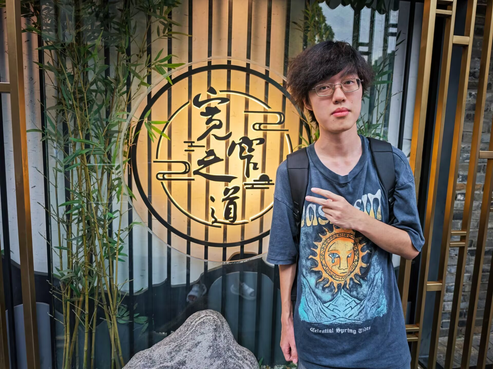

Undergraduate Student, School of Computer Science, Wuhan University
花儿育种而凋/我们学会淡忘
Email: yishouzhuo@whu.edu.cn
GitHub: shouzhuoyi
Undergraduate, Wuhan University — 2024 - Now
I am dedicated to developing CLIP-based multimodal Source-Free Domain Adaptation(SFDA)/Weakly Supervised Learning methods.
Email: yishouzhuo@whu.edu.cn
GitHub: shouzhuoyi
WeChat: yisz0519
Address: E514, School of Computer Science, Wuhan University